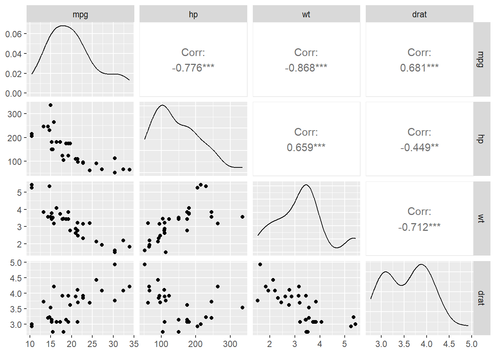

## Load my Libraries
library(palmerpenguins) ## Data Extraction --- E
library(dplyr) ## Data Transformation --- T
library(ggplot2) ## Data Visualization --- V
library(GGally) ## Data Visualization --- VHomework & Friday Quiz
The mtcars dataset is a classic and widely used dataset in R that contains specifications and performance data for 32 different car models from the 1974 Motor Trend magazine. Each row represents a unique vehicle, and each column records a specific attribute related to engine performance, design, or efficiency. Some key variables include mpg (miles per gallon), hp (gross horsepower), wt (weight in 1000 lbs), drat (rear axle ratio), and qsec (quarter-mile time). Additionally, the dataset includes categorical variables encoded as numeric values, such as cyl (number of cylinders), am (transmission type), and gear (number of forward gears).
This dataset is frequently used in regression modeling and statistical learning due to its compact size, real-world relevance, and mixture of quantitative and categorical variables. Analysts often model fuel efficiency (mpg) as a function of other variables to understand how engine power, vehicle weight, or gear ratios impact gas mileage. With its balance of complexity and interpretability, mtcars serves as a great playground for developing skills in exploratory data analysis, model selection, variable interpretation, and diagnostics in both teaching and applied settings.
🔍 Exploratory Visualization
mtcars %>%
select(mpg, hp, wt, drat) %>%
ggpairs()
📈 Model 1: mpg ~ hp
model1 <- lm(mpg ~ hp, data = mtcars)
summary(model1)
Call:
lm(formula = mpg ~ hp, data = mtcars)
Residuals:
Min 1Q Median 3Q Max
-5.7121 -2.1122 -0.8854 1.5819 8.2360
Coefficients:
Estimate Std. Error t value Pr(>|t|)
(Intercept) 30.09886 1.63392 18.421 < 2e-16 ***
hp -0.06823 0.01012 -6.742 1.79e-07 ***
---
Signif. codes: 0 '***' 0.001 '**' 0.01 '*' 0.05 '.' 0.1 ' ' 1
Residual standard error: 3.863 on 30 degrees of freedom
Multiple R-squared: 0.6024, Adjusted R-squared: 0.5892
F-statistic: 45.46 on 1 and 30 DF, p-value: 1.788e-07# Metrics
n <- nrow(mtcars)
p <- length(coef(model1)) - 1
RSS <- sum(residuals(model1)^2)
RSE <- sqrt(RSS / (n - p - 1))
RMSE <- sqrt(RSS / n)
R2 <- summary(model1)$r.squared
adj_R2 <- summary(model1)$adj.r.squared
aic_val <- AIC(model1)
bic_val <- BIC(model1)
model1_metrics <- data.frame(
type = "Model 1: mpg ~ hp",
RSS, RSE, RMSE, R2, Adj_R2 = adj_R2, AIC = aic_val, BIC = bic_val
)
model1_metrics type RSS RSE RMSE R2 Adj_R2 AIC
1 Model 1: mpg ~ hp 447.6743 3.862962 3.740297 0.6024373 0.5891853 181.2386
BIC
1 185.6358📈 Model 2: mpg ~ hp + wt
model2 <- lm(mpg ~ hp + wt, data = mtcars)
summary(model2)
Call:
lm(formula = mpg ~ hp + wt, data = mtcars)
Residuals:
Min 1Q Median 3Q Max
-3.941 -1.600 -0.182 1.050 5.854
Coefficients:
Estimate Std. Error t value Pr(>|t|)
(Intercept) 37.22727 1.59879 23.285 < 2e-16 ***
hp -0.03177 0.00903 -3.519 0.00145 **
wt -3.87783 0.63273 -6.129 1.12e-06 ***
---
Signif. codes: 0 '***' 0.001 '**' 0.01 '*' 0.05 '.' 0.1 ' ' 1
Residual standard error: 2.593 on 29 degrees of freedom
Multiple R-squared: 0.8268, Adjusted R-squared: 0.8148
F-statistic: 69.21 on 2 and 29 DF, p-value: 9.109e-12# Metrics
p <- length(coef(model2)) - 1
RSS <- sum(residuals(model2)^2)
RSE <- sqrt(RSS / (n - p - 1))
RMSE <- sqrt(RSS / n)
R2 <- summary(model2)$r.squared
adj_R2 <- summary(model2)$adj.r.squared
aic_val <- AIC(model2)
bic_val <- BIC(model2)
model2_metrics <- data.frame(
type = "Model 2: mpg ~ hp + wt",
RSS, RSE, RMSE, R2, Adj_R2 = adj_R2, AIC = aic_val, BIC = bic_val
)
model2_metrics type RSS RSE RMSE R2 Adj_R2
1 Model 2: mpg ~ hp + wt 195.0478 2.593412 2.468854 0.8267855 0.8148396
AIC BIC
1 156.6523 162.5153# Partial F-test: Does adding wt help?
anova(model1, model2)Analysis of Variance Table
Model 1: mpg ~ hp
Model 2: mpg ~ hp + wt
Res.Df RSS Df Sum of Sq F Pr(>F)
1 30 447.67
2 29 195.05 1 252.63 37.561 1.12e-06 ***
---
Signif. codes: 0 '***' 0.001 '**' 0.01 '*' 0.05 '.' 0.1 ' ' 1📈 Model 3: mpg ~ hp + wt + drat
model3 <- lm(mpg ~ hp + wt + drat, data = mtcars)
summary(model3)
Call:
lm(formula = mpg ~ hp + wt + drat, data = mtcars)
Residuals:
Min 1Q Median 3Q Max
-3.3598 -1.8374 -0.5099 0.9681 5.7078
Coefficients:
Estimate Std. Error t value Pr(>|t|)
(Intercept) 29.394934 6.156303 4.775 5.13e-05 ***
hp -0.032230 0.008925 -3.611 0.001178 **
wt -3.227954 0.796398 -4.053 0.000364 ***
drat 1.615049 1.226983 1.316 0.198755
---
Signif. codes: 0 '***' 0.001 '**' 0.01 '*' 0.05 '.' 0.1 ' ' 1
Residual standard error: 2.561 on 28 degrees of freedom
Multiple R-squared: 0.8369, Adjusted R-squared: 0.8194
F-statistic: 47.88 on 3 and 28 DF, p-value: 3.768e-11# Metrics
p <- length(coef(model3)) - 1
RSS <- sum(residuals(model3)^2)
RSE <- sqrt(RSS / (n - p - 1))
RMSE <- sqrt(RSS / n)
R2 <- summary(model3)$r.squared
adj_R2 <- summary(model3)$adj.r.squared
aic_val <- AIC(model3)
bic_val <- BIC(model3)
model3_metrics <- data.frame(
type = "Model 3: mpg ~ hp + wt + drat",
RSS, RSE, RMSE, R2, Adj_R2 = adj_R2, AIC = aic_val, BIC = bic_val
)
model3_metrics type RSS RSE RMSE R2 Adj_R2
1 Model 3: mpg ~ hp + wt + drat 183.6819 2.561263 2.395842 0.8368791 0.8194018
AIC BIC
1 156.7311 164.0598# Partial F-test: Does adding drat help?
anova(model2, model3)Analysis of Variance Table
Model 1: mpg ~ hp + wt
Model 2: mpg ~ hp + wt + drat
Res.Df RSS Df Sum of Sq F Pr(>F)
1 29 195.05
2 28 183.68 1 11.366 1.7326 0.1988Model Comparison Summary
bind_rows(model1_metrics, model2_metrics, model3_metrics) type RSS RSE RMSE R2 Adj_R2
1 Model 1: mpg ~ hp 447.6743 3.862962 3.740297 0.6024373 0.5891853
2 Model 2: mpg ~ hp + wt 195.0478 2.593412 2.468854 0.8267855 0.8148396
3 Model 3: mpg ~ hp + wt + drat 183.6819 2.561263 2.395842 0.8368791 0.8194018
AIC BIC
1 181.2386 185.6358
2 156.6523 162.5153
3 156.7311 164.0598